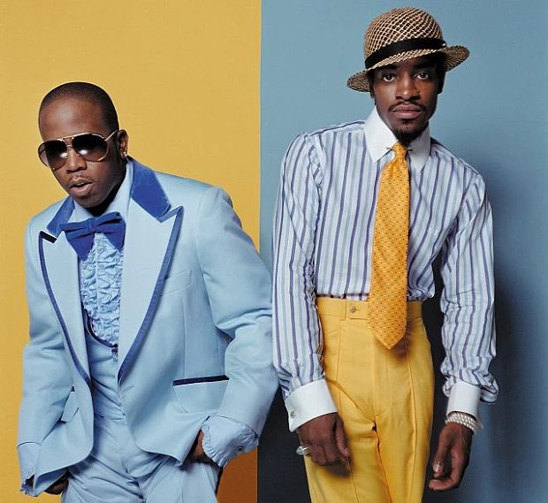

OutKast
Years Active: 1992–2007, 2014, 2016
Genre/s: Southern hip-hop, progressive rap, psychedelic rap
Label/s: Purple Ribbon, Arista, LaFace, RCA, Earthtone Ideas, Inc., Epic
Outkast (sometimes written as OutKast) was an American hip-hop duo formed in Atlanta, Georgia, in 1992, consisting of Big Boi (Antwan Patton) and André 3000 (André Benjamin, formerly known as Dré). Widely regarded as one of the greatest and most influential hip-hop acts of all time, the duo achieved both critical acclaim and commercial success from the mid-1990s to the mid-2000s, helping to popularize Southern hip-hop with their intricate lyricism, memorable melodies, and positive themes, while experimenting with a diverse range of genres such as funk, psychedelia, jazz, and techno.
Patton and Benjamin formed Outkast as high school students. They released their debut studio album Southernplayalisticadillacmuzik in 1994, which gained popularity after its single "Player's Ball" peaked atop the Billboard Hot Rap Songs chart. The duo further experimented and honed their sound with their second and third albums ATLiens (1996) and Aquemini (1998), both of which were met with critical acclaim. They then achieved mainstream recognition and continued acclaim with their fourth album Stankonia (2000), which was supported by the singles "B.O.B." and "Ms. Jackson", the latter of which topped the Billboard Hot 100 and won Best Rap Performance by a Duo or Group at the 44th Annual Grammy Awards.
The duo then released the double album Speakerboxxx/The Love Below (2003), their only album to debut atop the Billboard 200. It received Diamond certification by the Recording Industry Association of America (RIAA), was supported by the number one singles "The Way You Move" (performed by Big Boi) and "Hey Ya!" (performed by André 3000), and won Album of the Year at the 46th Annual Grammy Awards. Outkast starred in the 2006 musical film Idlewild and recorded the film's accompanying soundtrack, which was released as their final album three days before the film's release. The duo split the following year, and both members have pursued solo careers. Outkast temporarily reunited in 2014 to celebrate their debut album's 20th anniversary with performances at more than 40 festivals worldwide, beginning at the Coachella Festival in April 2014.
Along with being one of hip-hop's most influential acts, Outkast is also one of the most successful, having certified sales of 20 million records between six studio albums and a compilation album, as well as having earned six Grammy Awards. In 2015, Rolling Stone ranked them No. 7 on its list of the "20 Greatest Duos of All Time", while publications such as it and Pitchfork have listed their albums among the best in all of hip-hop and of all time. Outkast was inducted into the Rock and Roll Hall of Fame on November 8, 2025.